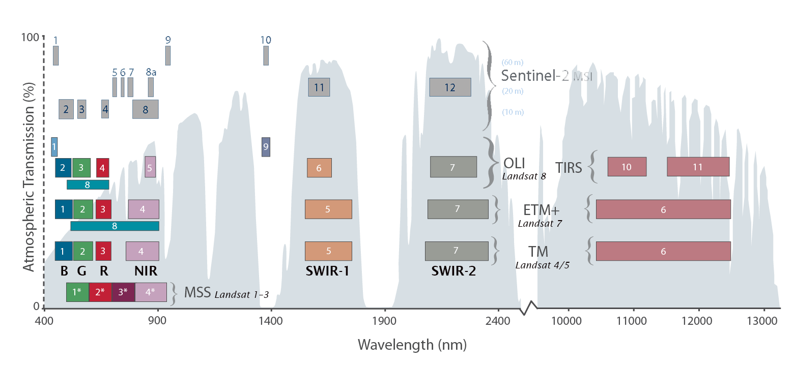
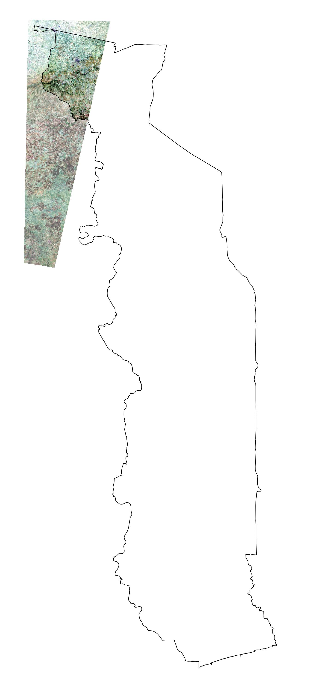
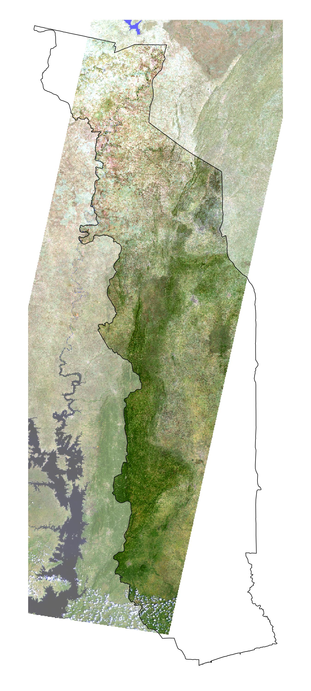
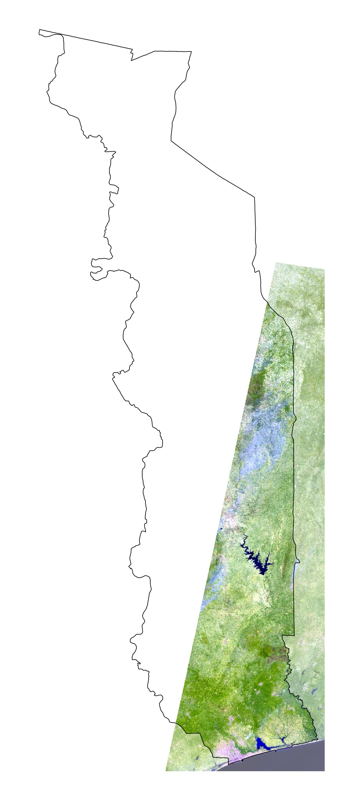
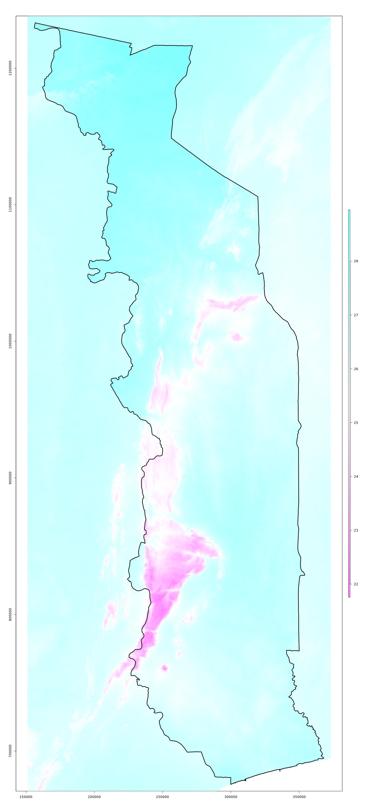
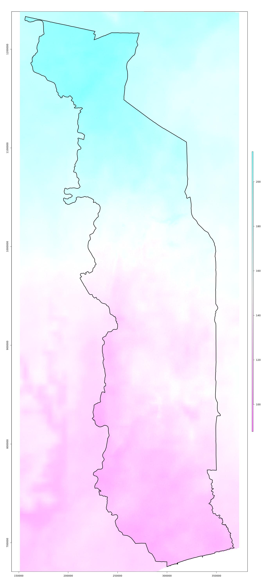
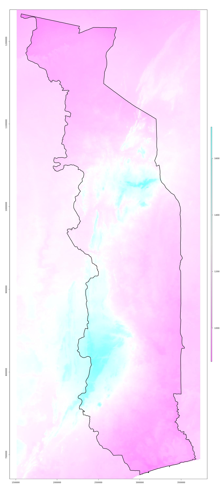
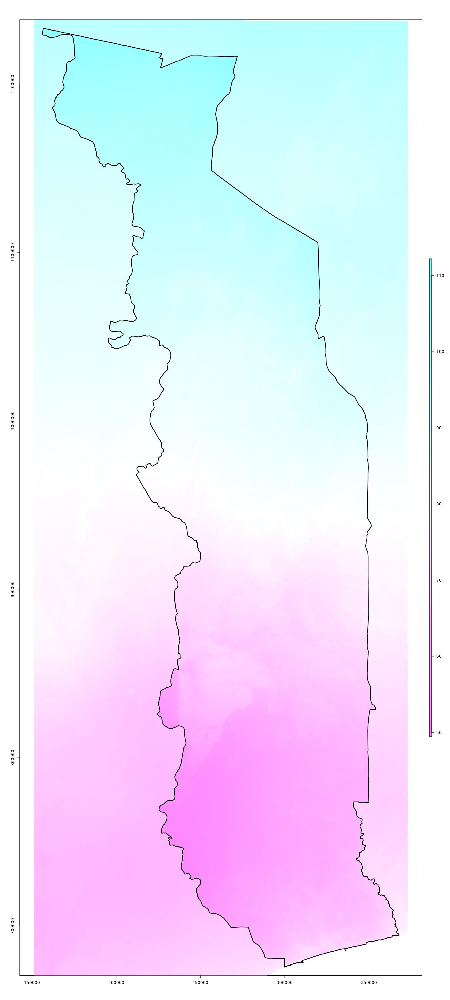

2.1 Images satellitaires
Actuellement, l’analyse de l’évolution du couvert forestier est principalement basée sur les images satellitaires Landsat, qui sont disponibles gratuitement dans les archives de l’USGS. Les missions Landsat-4 à Landsat-8 produisent des images de résolution spatiale et radiométrique comparable depuis les années 1980. Les images brutes sont corrigées géométriquement et radiométriquement par l’USGS (USGS Collection 1 Level-2 Surface Reflection Product).
La résolution spatiale des images est de 30 mètres. Les bandes spectrales utilisées sont B, G, R, NIR, SWIR-1 et SWIR-2 (voir les désignations des bandes dans la figure ci-dessous).

Le territoire du Togo est couvert par un total de 9 images Landsat (scènes WRS 2). Les zones couvertes par les différentes scènes sont indiquées dans la figure ci-dessous.

Les images Landsat utilisées pour l’évaluation du couvert forestier ont été prises idéalement à la fin de la saison sèche, c’est-à-dire de (Nov), Déc, Jan, (Fév) et sont disponibles en bonne qualité (sans nuages ou seulement légèrement couvertes par des nuages et des ombres) pour la même date sur l’ensemble du chemin WRS 2 respectif. Pour les années de référence, là ou on aimerait des cartes qui couvrent l’ensemble du territoire du Togo, des images correspondantes sont nécessaires pour tous les trois chemins WRS 2.
Le tableau ci-dessous présente les images satellites utilisées pour l’analyse du couvert forestier au Togo. Les années de référence utilisées pour le NRF et les images correspondantes sont indiquées en caractères gras. Ce n’est que pour l’année 1991 que les images de différentes dates d’enregistrement ont été combinées pour le chemin WRS 193. L7* marque les images Landsat-7 avec des lacunes dans les données (SLC-off). La colonne GoogleEarth montre la répartition des dates des images de très haute résolution disponibles sur GoogleEarth. Seules les images de référence GoogleEarth de 2017 – 2018 ont été utilisées pour la calibration de la carte forêt/non-forêt 2018.
| WRS 192 054,055,056 |
WRS 193 052,053,054,055 |
WRS 194 052,053 |
GoogleEarth Référence |
|
|---|---|---|---|---|
| 2019 | L8 / 23.12.18 | L8 / 16.02.19 | L8 / 22.01.19 | ++ |
| 2018 | L8 / 05.01.18 | L8 / 12.01.18 | L8 / 18.12.17 | +++++++ |
| 2017 | L8 / 10.02.17 | L8 / 25.01.17 | L8 / 31.12.16 | +++ |
| 2016 | — | — | — | (+) |
| 2015 | L8 / 13.01.15 | L8 / 04.01.15 | L8 / 27.01.15 | (+) |
| 2014 | — | — | — | (++) |
| 2013 | L7* / 31.01.13 | L7* / 23.03.13 | L7* / 28.12.12 | (+) |
| 2012 | — | — | — | (++) |
| 2011 | L7* / 10.01.11 | — | — | (+) |
| 2010 | L7* / 21.01.10 | — | — | (+) |
| 2009 | L7* / 27.01.09 | — | — | |
| 2008 | — | — | — | |
| 2007 | L7* / 30.12.06 | L7* / 22.01.07 | L7* / 12.12.06 | |
| 2006 | — | — | — | |
| 2005 | L7* / 24.12.04 | L5 / 01.02.05 | L7* / 22.12.04 | |
| 2004 | — | — | — | |
| 2003 | L7 / 04.01.03 | L5 / 27.01.03 | L7 / 17.12.02 | (.) |
| 2002 | — | — | — | |
| 2001 | L7 / 13.12.00 | L7 / 12.01.01 | — | (.) |
| 2000 | L7 / 04.02.00 | — | — | |
| … | … | … | … | |
| 1997 | L5 / 10.02.97 | — | — | |
| … | … | … | … | |
| 1991 | L4 / 03.01.91 | L4 / 10.01.91 & L5 / 28.11.89 | — | |
| … | … | … | … | |
| 1987 | L5 / 31.12.86 | L5 / 23.01.87 | L5 / 29.12.86 | |
| 1986 | L5 / 13.01.86 | L5 / 06.03.85 | L5 / 11.01.86 |
2.1.1 Acquisition des images
Ouvrir le site USGS Earthexplorer. Dans la fenêtre Search Criteria il faut selectionner la période pour laquelle on cherche des images (Nov - Jan). Dans la fenêtre Data Sets, les produits Landsat Level-2 (Surface Reflectance) sont séléctionnés. Dans la fenêtre Additional Criteria il faut choisir les scènes (chemin 192: 054-056 / chemin 193: 052-055 / chemin 194: 052-053).

Parmi les images disponibles, on sélectionne celles qui sont disponibles à la même date et en bonne qualité pour l’ensemble du chemin WRS. On copie les identifier des images à télécharger dans un fichier txt.
Ensuite on ouvre le site USGS ESPA pour commander les images choisi. On charge le fichier txt avec les identifier des images et on commande les bandes Surface Reflectance et les indices spéctrales (voir image au-dessous). Pour commander des images, il faut qu’on a un compte USGS.

Une fois on est notifié par eMail que les images sont prêts, on les téléchargent manuellement ou tous ensemble avec le USGS bulkdownloader et la commande download_espa_order.py -u [nom d'utilisateur] -o ALL -d [répértoire]. On dézip les images et les rangent dans le répétoire data/Landsat sous la scène et l’année correspondante. Pour des images de l’hiver 2019/20, l’année correspondante est 2020.
2.1.2 Prétraitement des images
Description
Le premier traitement est la préparation des images Landsat et autres variables utilisés pour modéliser la surface forestier ou la biomasse aérienne comme les données topographique et climatiques. L’objectif est qu’on prépare avec les données brutes un jeu de données raster complet sur le même extent (territoir du Togo) et avec la même résolution spatiale de 30 mètres (résolution de base des images Landsat).
On ouvre le script 1_prepare-images.R et on modifie la liste des images Landsat à utiliser (in.image.list), par exemple par ajouter les nouveaux image à considérer dans les analyses:
p192.2019 = list(
paste0(DATA.DIR, "/Landsat/192_054/2019/LC081920542018122301T1-SC20190405164258/"),
paste0(DATA.DIR, "/Landsat/192_055/2019/LC081920552018122301T1-SC20190405163359/"),
paste0(DATA.DIR, "/Landsat/192_056/2019/LC081920562018122301T1-SC20190405163342/"))
...
p193.2019 = list(
paste0(DATA.DIR, "/Landsat/193_052/2019/LC081930522019021601T1-SC20190405183839/"),
paste0(DATA.DIR, "/Landsat/193_053/2019/LC081930532019021601T1-SC20190405181518/"),
paste0(DATA.DIR, "/Landsat/193_054/2019/LC081930542019021601T1-SC20190405183609/"),
paste0(DATA.DIR, "/Landsat/193_055/2019/LC081930552019021601T1-SC20190405181507/"))
...
p194.2019 = list(
paste0(DATA.DIR, "/Landsat/194_052/2019/LC081940522019012201T1-SC20190405172019/"),
paste0(DATA.DIR, "/Landsat/194_053/2019/LC081940532019012201T1-SC20190405172055/"))Outre la définition des images à traiter, le script définit une fonction prepare.image pour stacker les différentes bandes des images Landsat, pour les fusioner, masquer et couper les images Landsat chemin par chemin (WRS2 paths 192, 193 et 194 pour Togo). Par défaut, les images qui ont déjà été traité (filename existe déjà) ne sont plus traité (overwrite=FALSE).
Dans la deuxième partie du script, là où c’est noté # DO THE WORK ---------, on lance le traitement des images. Avec le code foreach(...) %dopar% { ... } on lance le traitement de chaque chemin pour chaque année sur des différents processeurs au parallèle. À la fin du script on
- transforme les images du chemin 194 du système de coordonnées UTM 30 vers UTM 31
- prépare les données topographiques SRTM et les données climatiques Worldclim v2
- produit des thumbnails des images Landsat et Worldclim v2 en format JPEG (voir example au-dessous)
Les images prétraités sont sauveguarder dans le répétoire input/1_images du projet, ensemble avec des Thumbnails des chemins. Dans une prochaîne étape, les images sont néttoyées de l’eau, nuages et ombres en utilisant les bandes Landsat de qualité des pixels. Finalement également les données topographiques (SRTM) et climatiques (Worldclim v2) sont préparés.
Example
 Images Landsat de l’année 2019: chemin p194 composé de 2 scénes du 22.01.2019 / p193 avec 4 scènes du 16.02.2019 / p192 avec 3 scènes du 23.12.2018
 Données bioclimatiques Worldclim v2: température annuelle moyenne (BIO1) / saisonalité de la température (BIO4) / précipitation annuelle (BIO12) / saisonalité de la précipitation (BIO15)
1_prepare-images.R
####################################################################
# NERF_Togo/1_prepare-images.R: cleaning and stacking Landsat images
# ------------------------------------------------------------------
# Bern University of Applied Sciences
# Oliver Gardi, <oliver.gardi@bfh.ch>
# 13 November 2019
## @knitr load.images
# load WRS scenes
WRS <- readOGR(paste0(DATA.DIR, "/Landsat/WRS2/WRS2_descending.shp"))
# Selection of images to prepare and to merge -------------------------------------------
in.image.list <- list(
# Path 192
p192.1986 = list(paste0(DATA.DIR, "/Landsat/192_054/1986/LT051920541986011301T1-SC20190405164223/"),
paste0(DATA.DIR, "/Landsat/192_055/1986/LT051920551986011301T1-SC20190405164227/"),
paste0(DATA.DIR, "/Landsat/192_056/1986/LT051920561986011301T1-SC20190405164153/")),
p192.1987 = list(paste0(DATA.DIR, "/Landsat/192_054/1987/LT051920541986123101T1-SC20190405164150/"),
paste0(DATA.DIR, "/Landsat/192_055/1987/LT051920551986123101T1-SC20190405163521/"),
paste0(DATA.DIR, "/Landsat/192_056/1987/LT051920561986123101T1-SC20190405164444/")),
p192.1991 = list(paste0(DATA.DIR, "/Landsat/192_054/1991/LT041920541991010301T1-SC20190405164201/"),
paste0(DATA.DIR, "/Landsat/192_055/1991/LT041920551991010301T1-SC20190405165911/"),
paste0(DATA.DIR, "/Landsat/192_056/1991/LT041920561991010301T1-SC20190405163911/")),
p192.2001 = list(paste0(DATA.DIR, "/Landsat/192_054/2001/LE071920542000121301T1-SC20190405165521/"),
paste0(DATA.DIR, "/Landsat/192_055/2001/LE071920552000121301T1-SC20190405165645/"),
paste0(DATA.DIR, "/Landsat/192_056/2001/LE071920562000121301T1-SC20190405164029/")),
p192.2003 = list(paste0(DATA.DIR, "/Landsat/192_054/2003/LE071920542003010401T1-SC20190520111322/"),
paste0(DATA.DIR, "/Landsat/192_055/2003/LE071920552003010401T1-SC20190520100402/"),
paste0(DATA.DIR, "/Landsat/192_056/2003/LE071920562003010401T1-SC20190520100206/")),
p192.2005 = list(paste0(DATA.DIR, "/Landsat/192_054/2005/LE071920542004122401T1-SC20190405165520/"),
paste0(DATA.DIR, "/Landsat/192_055/2005/LE071920552004122401T1-SC20190405164050/"),
paste0(DATA.DIR, "/Landsat/192_056/2005/LE071920562004122401T1-SC20190405164030/")),
p192.2007 = list(paste0(DATA.DIR, "/Landsat/192_054/2007/LE071920542006123001T1-SC20190406034211/"),
paste0(DATA.DIR, "/Landsat/192_055/2007/LE071920552006123001T1-SC20190406034231/"),
paste0(DATA.DIR, "/Landsat/192_056/2007/LE071920562006123001T1-SC20190406034202/")),
p192.2011 = list(paste0(DATA.DIR, "/Landsat/192_054/2011/LE071920542011011001T1-SC20190406034214/"),
paste0(DATA.DIR, "/Landsat/192_055/2011/LE071920552011011001T1-SC20190406034114/"),
paste0(DATA.DIR, "/Landsat/192_056/2011/LE071920562011011001T1-SC20190406034155/")),
p192.2013 = list(paste0(DATA.DIR, "/Landsat/192_054/2013/LE071920542013013101T1-SC20190406034224/"),
paste0(DATA.DIR, "/Landsat/192_055/2013/LE071920552013013101T1-SC20190406034046/"),
paste0(DATA.DIR, "/Landsat/192_056/2013/LE071920562013013101T1-SC20190406034057/")),
p192.2015 = list(paste0(DATA.DIR, "/Landsat/192_054/2015/LC081920542015011301T1-SC20190405163446/"),
paste0(DATA.DIR, "/Landsat/192_055/2015/LC081920552015011301T1-SC20190405163723/"),
paste0(DATA.DIR, "/Landsat/192_056/2015/LC081920562015011301T1-SC20190405164231/")),
p192.2017 = list(paste0(DATA.DIR, "/Landsat/192_054/2017/LC081920542017021901T1-SC20190405163339/"),
paste0(DATA.DIR, "/Landsat/192_055/2017/LC081920552017021901T1-SC20190405163342/"),
paste0(DATA.DIR, "/Landsat/192_056/2017/LC081920562017021901T1-SC20190405163222/")),
p192.2018 = list(paste0(DATA.DIR, "/Landsat/192_054/2018/LC081920542018010501T1-SC20190405164304/"),
paste0(DATA.DIR, "/Landsat/192_055/2018/LC081920552018010501T1-SC20190405163402/"),
paste0(DATA.DIR, "/Landsat/192_056/2018/LC081920562018010501T1-SC20190405163250/")),
p192.2019 = list(paste0(DATA.DIR, "/Landsat/192_054/2019/LC081920542018122301T1-SC20190405164258/"),
paste0(DATA.DIR, "/Landsat/192_055/2019/LC081920552018122301T1-SC20190405163359/"),
paste0(DATA.DIR, "/Landsat/192_056/2019/LC081920562018122301T1-SC20190405163342/")),
# # Path 193
p193.1985 = list(paste0(DATA.DIR, "/Landsat/193_052/1985/LT051930521985030601T1-SC20190520100259/"),
paste0(DATA.DIR, "/Landsat/193_053/1985/LT051930531985030601T1-SC20190520100324/"),
paste0(DATA.DIR, "/Landsat/193_054/1985/LT051930541985030601T1-SC20190520100340/"),
paste0(DATA.DIR, "/Landsat/193_055/1985/LT051930551985030601T1-SC20190520100140/")),
p193.1987 = list(paste0(DATA.DIR, "/Landsat/193_052/1987/LT051930521987012301T1-SC20190405182322/"),
paste0(DATA.DIR, "/Landsat/193_053/1987/LT051930531987012301T1-SC20190405182335/"),
paste0(DATA.DIR, "/Landsat/193_054/1987/LT051930541987012301T1-SC20190405182331/"),
paste0(DATA.DIR, "/Landsat/193_055/1987/LT051930551987012301T1-SC20190405182328/")),
# images of two different dates!
p193.1990.1 = list(paste0(DATA.DIR, "/Landsat/193_052/1990/LT051930521989112801T1-SC20190520100201/"),
paste0(DATA.DIR, "/Landsat/193_053/1990/LT051930531989112801T1-SC20190520100233/")),
p193.1990.2 = list(paste0(DATA.DIR, "/Landsat/193_054/1991/LT041930541991011001T1-SC20190402043117/"),
paste0(DATA.DIR, "/Landsat/193_055/1991/LT041930551991011001T1-SC20190402042453/")),
p193.2000 = list(paste0(DATA.DIR, "/Landsat/193_052/2000/LE071930522000020401T1-SC20190520100729/"),
paste0(DATA.DIR, "/Landsat/193_053/2000/LE071930532000020401T1-SC20190520100345/"),
paste0(DATA.DIR, "/Landsat/193_054/2000/LE071930542000020401T1-SC20190402045232/"),
paste0(DATA.DIR, "/Landsat/193_055/2000/LE071930552000020401T1-SC20190402043121/")),
p193.2003 = list(paste0(DATA.DIR, "/Landsat/193_052/2003/LE071930522002122601T1-SC20190405182352/"),
paste0(DATA.DIR, "/Landsat/193_053/2003/LE071930532002122601T1-SC20190405182309/"),
paste0(DATA.DIR, "/Landsat/193_054/2003/LE071930542002122601T1-SC20190405182226/"),
paste0(DATA.DIR, "/Landsat/193_055/2003/LE071930552002122601T1-SC20190405190255/")),
p193.2005 = list(paste0(DATA.DIR, "/Landsat/193_052/2005/LE071930522005021701T1-SC20190405190117/"),
paste0(DATA.DIR, "/Landsat/193_053/2005/LE071930532005021701T1-SC20190405190003/"),
paste0(DATA.DIR, "/Landsat/193_054/2005/LE071930542005021701T1-SC20190405182210/"),
paste0(DATA.DIR, "/Landsat/193_055/2005/LE071930552005021701T1-SC20190405190021/")),
p193.2007 = list(paste0(DATA.DIR, "/Landsat/193_052/2007/LE071930522007012201T1-SC20190405182221/"),
paste0(DATA.DIR, "/Landsat/193_053/2007/LE071930532007012201T1-SC20190405182607/"),
paste0(DATA.DIR, "/Landsat/193_054/2007/LE071930542007012201T1-SC20190405182139/"),
paste0(DATA.DIR, "/Landsat/193_055/2007/LE071930552007012201T1-SC20190405182418/")),
p193.2009 = list(paste0(DATA.DIR, "/Landsat/193_052/2009/LE071930522009012701T1-SC20190405182143/"),
paste0(DATA.DIR, "/Landsat/193_053/2009/LE071930532009012701T1-SC20190405182301/"),
paste0(DATA.DIR, "/Landsat/193_054/2009/LE071930542009012701T1-SC20190405182103/"),
paste0(DATA.DIR, "/Landsat/193_055/2009/LE071930552009012701T1-SC20190405182754/")),
p193.2013 = list(paste0(DATA.DIR, "/Landsat/193_052/2013/LE071930522013022301T1-SC20190405182200/"),
paste0(DATA.DIR, "/Landsat/193_053/2013/LE071930532013022301T1-SC20190405182213/"),
paste0(DATA.DIR, "/Landsat/193_054/2013/LE071930542013022301T1-SC20190405182152/"),
paste0(DATA.DIR, "/Landsat/193_055/2013/LE071930552013022301T1-SC20190405182331/")),
p193.2015 = list(paste0(DATA.DIR, "/Landsat/193_052/2015/LC081930522015010401T1-SC20190405181512/"),
paste0(DATA.DIR, "/Landsat/193_053/2015/LC081930532015010401T1-SC20190405181751/"),
paste0(DATA.DIR, "/Landsat/193_054/2015/LC081930542015010401T1-SC20190402042510/"),
paste0(DATA.DIR, "/Landsat/193_055/2015/LC081930552015010401T1-SC20190402042446/")),
p193.2017 = list(paste0(DATA.DIR, "/Landsat/193_052/2017/LC081930522017012501T1-SC20190405181511/"),
paste0(DATA.DIR, "/Landsat/193_053/2017/LC081930532017012501T1-SC20190405181440/"),
paste0(DATA.DIR, "/Landsat/193_054/2017/LC081930542017012501T1-SC20190405181458/"),
paste0(DATA.DIR, "/Landsat/193_055/2017/LC081930552017012501T1-SC20190405181444/")),
p193.2018 = list(paste0(DATA.DIR, "/Landsat/193_052/2018/LC081930522018011201T1-SC20190405181524/"),
paste0(DATA.DIR, "/Landsat/193_053/2018/LC081930532018011201T1-SC20190405181459/"),
paste0(DATA.DIR, "/Landsat/193_054/2018/LC081930542018011201T1-SC20190405181510/"),
paste0(DATA.DIR, "/Landsat/193_055/2018/LC081930552018011201T1-SC20190405181442/")),
p193.2019 = list(paste0(DATA.DIR, "/Landsat/193_052/2019/LC081930522019021601T1-SC20190405183839/"),
paste0(DATA.DIR, "/Landsat/193_053/2019/LC081930532019021601T1-SC20190405181518/"),
paste0(DATA.DIR, "/Landsat/193_054/2019/LC081930542019021601T1-SC20190405183609/"),
paste0(DATA.DIR, "/Landsat/193_055/2019/LC081930552019021601T1-SC20190405181507/")),
# # Path 194
p194.1986 = list(paste0(DATA.DIR, "/Landsat/194_052/1986/LT051940521986011101T1-SC20190405172804/"),
paste0(DATA.DIR, "/Landsat/194_053/1986/LT051940531986011101T1-SC20190405172758/")),
p194.1987 = list(paste0(DATA.DIR, "/Landsat/194_052/1987/LT051940521986122901T1-SC20190405172903/"),
paste0(DATA.DIR, "/Landsat/194_053/1987/LT051940531986122901T1-SC20190405174433/")),
p194.1997 = list(paste0(DATA.DIR, "/Landsat/194_052/1997/LT051940521997021001T1-SC20190405181746/"),
paste0(DATA.DIR, "/Landsat/194_053/1997/LT051940531997021001T1-SC20190405173130/")),
p194.2000 = list(paste0(DATA.DIR, "/Landsat/194_052/2000/LE071940522000012601T1-SC20190405172721/"),
paste0(DATA.DIR, "/Landsat/194_053/2000/LE071940532000012601T1-SC20190405172733/")),
p194.2003 = list(paste0(DATA.DIR, "/Landsat/194_052/2003/LE071940522002121701T1-SC20190405172823/"),
paste0(DATA.DIR, "/Landsat/194_053/2003/LE071940532002121701T1-SC20190405172739/")),
p194.2005 = list(paste0(DATA.DIR, "/Landsat/194_052/2005/LE071940522004122201T1-SC20190405172700/"),
paste0(DATA.DIR, "/Landsat/194_053/2005/LE071940532004122201T1-SC20190405172612/")),
p194.2007 = list(paste0(DATA.DIR, "/Landsat/194_052/2007/LT051940522007010501T1-SC20190405172919/"),
paste0(DATA.DIR, "/Landsat/194_053/2007/LT051940532007010501T1-SC20190405172216/")),
p194.2010 = list(paste0(DATA.DIR, "/Landsat/194_052/2010/LE071940522010012101T1-SC20190405172745/"),
paste0(DATA.DIR, "/Landsat/194_053/2010/LE071940532010012101T1-SC20190405173304/")),
p194.2012 = list(paste0(DATA.DIR, "/Landsat/194_052/2012/LE071940522012011101T1-SC20190405173146/"),
paste0(DATA.DIR, "/Landsat/194_053/2012/LE071940532012011101T1-SC20190405172236/")),
# Indices not available!
# p194.2013 = list(paste0(DATA.DIR, "/Landsat/194_052/2013/LE071940522012122801T1-SC20190405172704/"),
# paste0(DATA.DIR, "/Landsat/194_053/2013/LE071940532012122801T1-SC20190405172717/")),
p194.2015 = list(paste0(DATA.DIR, "/Landsat/194_052/2015/LC081940522015012701T1-SC20190405172055/"),
paste0(DATA.DIR, "/Landsat/194_053/2015/LC081940532015012701T1-SC20190405172042/")),
p194.2017 = list(paste0(DATA.DIR, "/Landsat/194_052/2017/LC081940522016123101T1-SC20190405172058/"),
paste0(DATA.DIR, "/Landsat/194_053/2017/LC081940532016123101T1-SC20190405172040/")),
p194.2018 = list(paste0(DATA.DIR, "/Landsat/194_052/2018/LC081940522017121801T1-SC20190405172038/"),
paste0(DATA.DIR, "/Landsat/194_053/2018/LC081940532017121801T1-SC20190405174114/")),
p194.2019 = list(paste0(DATA.DIR, "/Landsat/194_052/2019/LC081940522019012201T1-SC20190405172019/"),
paste0(DATA.DIR, "/Landsat/194_053/2019/LC081940532019012201T1-SC20190405172055/"))
)
# create scene list ----------
# sink(paste0(INPUT.DIR, "/Landsat/scenes.txt")
# for(image.dirs in in.image.list) {
#
# for(image.dir in image.dirs) {
#
# cat(sub("_ANG[.]txt", "", dir(image.dir)[1]),"\n")
# }
# }
# sink()
# Function for processing and merging a set of Landsat images -----------------------------------------------------------
## @knitr prepare.image
prepare.image <- function(in.image.dirs, ext=NULL, filename=NULL, overwrite=FALSE, log=TRUE) {
# load file, if filename already exists and overwrite=FALSE
if(!is.null(filename) && file.exists(filename) && overwrite==FALSE) {
message("- loading from file ", filename)
out.image <- stack(filename)
} else {
# open logfile
if(!is.null(filename) & log==TRUE) {
dir.create(dirname(filename), recursive = TRUE, showWarnings = FALSE)
logfile <- file(sub("\\.[[:alnum:]]+$", ".log", filename), open="wt")
sink(logfile, type="output")
sink(logfile, type="message")
message(date())
}
# list for the imported and cleaned images
images <- list()
qas <- list()
# read and process the individual images
for(image.dir in in.image.dirs) {
image.sensor <- substr(basename(image.dir), 0,4)
if(image.sensor=="LC08") {
image <- stack(grep("^.*_(pixel_qa|band2|band3|band4|band5|band6|band7|evi|msavi|nbr|nbr2|ndmi|ndvi|savi).tif$", dir(image.dir, full.names=TRUE), value=TRUE))
} else {
image <- stack(grep("^.*_(pixel_qa|band1|band2|band3|band4|band5|band7|evi|msavi|nbr|nbr2|ndmi|ndvi|savi).tif$", dir(image.dir, full.names=TRUE), value=TRUE))
}
image.bands <- sub("^.*_", "", names(image))
# check the number and order of stack-layers
if(nlayers(image)!=14 ||
(image.sensor=="LC08" && image.bands!=c("qa", "band2", "band3", "band4", "band5", "band6", "band7", "evi", "msavi", "nbr", "nbr2", "ndmi", "ndvi", "savi")) ||
(image.sensor!="LC08" && image.bands!=c("qa", "band1", "band2", "band3", "band4", "band5", "band7", "evi", "msavi", "nbr", "nbr2", "ndmi", "ndvi", "savi")))
stop("image does not have the correct number/order of bands (qa, B, G, R, NIR, SWIR1, SWIR2, evi, msavi, nbr, nbr2, ndmi, ndvi, savi)")
image.name <- substr(names(image)[1], 1, 40)
image.scene <- paste0(substr(image.name, 11, 13), "_", substr(image.name, 14, 16))
image.date <- substr(image.name, 18, 21)
image.path <- as.numeric(substr(image.scene, 1, 3))
image.row <- as.numeric(substr(image.scene, 5, 7))
message("- ", image.name, ": ", appendLF = FALSE)
# image <- image[[1]]
# crop and mask the image with extent (if any)
if(!is.null(ext)) {
message("crop ext ... ", appendLF = FALSE)
image <- crop(image, ext)
}
# crop/mask with WRS
message("crop/mask WRS2 ... ", appendLF = FALSE)
wrs <- spTransform(WRS[WRS$PATH==image.path & WRS$ROW==image.row, ], CRS=crs(image))
image <- mask(crop(image, wrs), wrs)
# extract and mask with quality band
qa <- image[[1]]
image <- dropLayer(image, 1)
# message("mask cloud/shadow ... ", appendLF = FALSE)
# if(image.sensor=="LC08") {
# # Landsat 8: values 392 - 480 / 840 - 880 / 904 - 992 are medium to high confidence cloud/ice/shadow
# # https://prd-wret.s3-us-west-2.amazonaws.com/assets/palladium/production/s3fs-public/atoms/files/LSDS-1368_%20L8_Surface-Reflectance-Code-LASRC-Product-Guide.pdf (p. 22)
# qa[qa %in% c(392, 400, 416, 432, 480,
# 840, 848, 864, 880,
# 904, 912, 928, 944, 992)] <- NA
#
# } else {
# # Landsat 4-7: values ≥ 136 are medium to high confidence cloud/ice/shadow
# # https://prd-wret.s3-us-west-2.amazonaws.com/assets/palladium/production/s3fs-public/atoms/files/LSDS-1370_L4-7_Surface%20Reflectance-LEDAPS-Product-Guide.pdf
# qa[qa >= 136] <- NA
# }
# image <- mask(image, qa)
# remove non-valid reflectance values
message("clean sr ... ", appendLF = FALSE)
for(i in 1:6) {
image[[i]] <- reclassify(image[[i]], cbind(-Inf, 0, NA), right=FALSE)
image[[i]] <- reclassify(image[[i]], cbind(10000, Inf, NA), right=TRUE)
}
# remove non-valid index values
for(i in 7:13) {
image[[i]] <- reclassify(image[[i]], cbind(-Inf, -10000, NA), right=FALSE)
image[[i]] <- reclassify(image[[i]], cbind(10000, Inf, NA), right=TRUE)
}
# set whole stack to NA where one single layer is NA
m <- sum(image)
image <- mask(image, m)
names(image) <- BANDS[-c(length(BANDS)-1:0)]
# write out the individual images
# message("writing scene ... ", appendLF = FALSE)
# filename.scene <- sub("complete", paste0("r0", image.row), sub(paste0("p", image.path, "_"), paste0("p", image.path, "_r0", image.row, "_"), filename))
# image <- writeRaster(image, filename = filename.scene, overwrite = TRUE, datatype="INT2S", options=c("COMPRESS=NONE"))
# qa <- writeRaster(qa, filename = sub("[.]tif$", paste0("_qa", image.sensor, ".tif"), filename.scene), overwrite = TRUE, datatype="INT2S", options=c("COMPRESS=NONE"))
# message("done")
images[[length(images)+1]] <- image
qas[[length(qas)+1]] <- qa
}
# merge the images in the list
message("- merging scenes ... ", appendLF = FALSE)
out.image <- do.call(merge, images)
out.qa <- do.call(merge, qas)
# write it to a file
if (!is.null(filename) && (!file.exists(filename) || overwrite == TRUE)) {
message("writing to file ", filename, " ... ", appendLF = FALSE)
out.image <- writeRaster(out.image, filename = filename, overwrite = overwrite, datatype="INT2S", options=c("COMPRESS=NONE"))
names(out.image) <- BANDS[-c(length(BANDS)-1:0)]
out.qa <- writeRaster(out.qa, filename = sub("[.]tif$", paste0("_qa", image.sensor, ".tif"), filename), overwrite = overwrite, datatype="INT2S")
}
}
message("done")
print(out.image)
# close the logfile
if(!is.null(filename) & log==TRUE) {
sink(type="output")
sink(type="message")
}
# return image invisibly
invisible(out.image)
}
# DO THE WORK ---------
## @knitr execute
# be careful, can easily fill the tmp directory! Maybe only for a part of the images and then restart R
# extent of Togo + 5km buffer
TGO.ext.30 <- extent(spTransform(TGO, utm.30)) + 10000
# go through all scenes (path/row) ...
registerDoParallel(.env$numCores-1)
#foreach(i=1:length(in.image.list)) %dopar% { # 1) %do% {
foreach(i=1:13) %dopar% { # 1) %do% {
in.image.dirs <- in.image.list[[i]]
name <- unlist(strsplit(names(in.image.list[i]), "[.]"))
path <- name[1]
year <- name[2]
tile <- name[3]
if(path == "p194") tmp.ext <- TGO.ext.30 else tmp.ext <- TGO.ext
out.image.dir <- paste0(OUTPUT.DIR, "/1_images/", path)
if(!dir.exists(out.image.dir)) dir.create(out.image.dir)
if(is.na(tile)) {
filename <- paste0(out.image.dir, "/", path, "_", year, ".tif")
} else {
filename <- paste0(out.image.dir, "/", path, "_", year, "_", tile, ".tif")
}
message("Processing ", path, "_", year)
prepare.image(in.image.dirs, ext = tmp.ext, filename = filename, overwrite=FALSE, log=TRUE)
}
# remove temporary files
tmp_dir <- tempdir()
files <- list.files(tmp_dir, full.names = T, recursive=T)
file.remove(files)
# merge logfiles -------------------
for(dir in dir(paste0(OUTPUT.DIR, "/1_images/"), full.names=TRUE)) {
path <- basename(dir)
system(paste0("tail -n +1 ", dir, "/*.log > ", dir, "/", path, ".tmp"))
system(paste0("rm ", dir, "/*.log"))
system(paste0("mv ", dir, "/", path, ".tmp ", dir, "/", path, ".log"))
}
# Reprojection of p194 images from UTM 30 to UTM 31 --------------------------
in.dir <- "../output/1_images/p194"
# warp p194 UTM 30 images to UTM 31
foreach(image=dir(in.dir, pattern=".*[.]tif$")) %dopar% {
image <- paste0(in.dir, "/", image)
image.utm30 <- sub("[.]tif$", "utm30.tif", image)
file.rename(image, image.utm30)
system(paste("gdalwarp",
image.utm30,
"-t_srs '+proj=utm +zone=31 +datum=WGS84'",
"-tr 30 30",
"-te 147255 1017495 222165 1238265",
image,
"-ot 'Int16'",
"-overwrite"))
file.remove(image.utm30)
}
# cloud/shadow mask the images ----------------------------
registerDoParallel(.env$numCores-1)
foreach(file= c(dir("../output/1_images/p192", pattern=".*\\_[[:digit:]]+\\.tif$", full.names = TRUE),
dir("../output/1_images/p193", pattern=".*\\_[[:digit:]]+\\.tif$", full.names = TRUE),
dir("../output/1_images/p194", pattern=".*\\_[[:digit:]]+\\.tif$", full.names = TRUE))) %dopar% {
qa <- raster(dir(dirname(file), pattern=gsub("\\_", "\\_", sub("\\.tif", "_qa*", basename(file))), full.names=TRUE))
image <- mask(brick(file), qa %in% c(qa.cloud, qa.shadow, qa.water, qa.ice), maskvalue=TRUE)
writeRaster(image, sub("\\.tif", "_m.tif", file), overwrite = TRUE, datatype="INT2S", options=c("COMPRESS=NONE"))
}
# Thumbnails of each scene -------------------------------
foreach(filename=dir("../output/1_images", pattern="p19.*[.]tif$", recursive=TRUE, full.names=TRUE)) %dopar% {
image <- brick(filename)
jpeg(sub("[.]tif$", ".jpeg", filename), width=1350, height=3000)
par(plt=c(0,1,0,1))
plot(spTransform(TGO, utm.31))
plotRGB(image, r=6, g=5, b=3, stretch="lin", add=TRUE)
plot(mask(image[[1]], spTransform(TGO, utm.31), inverse=TRUE), col="#FFFFFF66", legend=FALSE, add=TRUE)
plot(spTransform(TGO, utm.31), add=TRUE, lwd=3)
dev.off()
}
# Prepare SRTM DEM ----------------------------
# Load 90m SRTM DEM (source: CGIAR),
dem.90 <- do.call(merge, lapply(as.list(dir(paste0(INPUT.DIR, "/SRTM/3arcsecond"), pattern=".*[.]tif$", full.names=TRUE)), raster))
# Merge 30m SRTM DEM and fill voids with 90m SRTM (source: USGS)
dem.30 <- foreach(tile=dir(paste0(INPUT.DIR, "/SRTM/1arcsecond"), pattern=".*[.]tif$", full.names=TRUE),
.combine=merge, .multicombine=TRUE) %dopar% {
dem.30.t <- raster(tile)
dem.90.t <- round(projectRaster(dem.90, dem.30.t))
merge(dem.30.t, dem.90.t)
}
# write it to the disk and reproject to reference Landsat image
writeRaster(dem.30, paste0(OUTPUT.DIR, "/1_images/SRTM/SRTM-1arcsec_raw.tif"), datatype="INT2S", overwrite=TRUE)
system(paste("gdalwarp",
paste0(OUTPUT.DIR, "/1_images/SRTM/SRTM-1arcsec_raw.tif"),
"-t_srs '+proj=utm +zone=31 +datum=WGS84'",
"-tr 30 30",
paste("-te", TGO.ext@xmin, TGO.ext@ymin, TGO.ext@xmax, TGO.ext@ymax),
paste0(OUTPUT.DIR, "/1_images/SRTM/SRTM-1arcsec.tif"),
"-ot 'Int16'",
"-co COMPRESS='LZW'",
"-co INTERLEAVE='BAND'",
"-overwrite"))
file.remove(paste0(OUTPUT.DIR, "/1_images/SRTM/SRTM-1arcsec_raw.tif"))
system(paste("gdalinfo -stats",
paste0(OUTPUT.DIR, "/1_images/SRTM/SRTM-1arcsec.tif")))
dem <- raster(paste0(OUTPUT.DIR, "/1_images/SRTM/SRTM-1arcsec.tif"))
jpeg(paste0(OUTPUT.DIR, "/1_images/SRTM/SRTM-1arcsec.jpeg"), width=1350, height=3000)
par(plt=c(0,1,0,1))
plot(dem)
plot(mask(dem, TGO, inverse=TRUE), col="#FFFFFF66", legend=FALSE, add=TRUE)
plot(TGO, add=TRUE, lwd=3)
dev.off()
# Prepare Worldclim v2 Data ----------------------------
foreach(file=dir(paste0(INPUT.DIR, "/Worldclim"), pattern=".*Togo[.]tif$")) %dopar% {
# wc.raster <- raster(paste0(INPUT.DIR, "/Worldclim/", file))
# raster.downscale(raster(paste0(INPUT.DIR, "/Worldclim/", file)), dem.30, ...)
system(paste("gdalwarp",
paste0(INPUT.DIR, "/Worldclim/", file),
"-t_srs '+proj=utm +zone=31 +datum=WGS84'",
"-tr 30 30",
paste("-te", TGO.ext@xmin, TGO.ext@ymin, TGO.ext@xmax, TGO.ext@ymax),
paste0(OUTPUT.DIR, "/1_images/WCv2/", file),
"-dstnodata -3.4e+38",
"-co COMPRESS='LZW'",
"-co INTERLEAVE='BAND'",
"-overwrite"))
system(paste("gdalinfo -stats",
paste0(OUTPUT.DIR, "/1_images/WCv2/", file)))
}
foreach(file=dir(paste0(OUTPUT.DIR, "/1_images/WCv2"), pattern=".*[.]tif$")) %dopar% {
image <- stack(paste0(OUTPUT.DIR, "/1_images/WCv2/", file))
type <- unlist(strsplit(file, "_"))[3]
if (type == "prec") { zlim <- c(0,320); col <- rev(topo.colors(255)) }
else if (type == "tmin") { zlim <- c(14.0,27.8); col <- rev(heat.colors(255)) }
else if (type == "tmax") { zlim <- c(24.9,37.5); col <- rev(heat.colors(255)) }
else if (type == "tavg") { zlim <- c(19.7,32.7); col <- rev(heat.colors(255)) }
else { zlim <- NA; col <- rev(cm.colors(255)) }
foreach(i=1:nlayers(image)) %dopar% {
jpeg(paste0(OUTPUT.DIR, "/1_images/WCv2/", sub("[.]tif$", "", file), "-", str_pad(i, 2, "left", 0), ".jpeg"), width=1350, height=3000)
plot(image[[i]], col=col, zlim=zlim)
plot(mask(image[[i]], TGO, inverse=TRUE), col="#FFFFFF66", legend=FALSE, add=TRUE)
plot(TGO, add=TRUE, lwd=3)
dev.off()
}
}